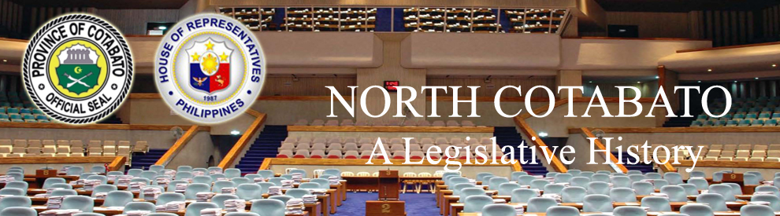

| History |
| Legislators |
| Laws |
| About |
 |
| LAWS ON NORTH COTABATO |
| LAWS ON NORTH COTABATO | DATE OF APPROVAL | TITLE | SOURCE | SUBJECT | |
| 1 | REPUBLIC ACT 59 | 10/17/1946 | AN ACT TO MAKE ELECTIVE THE OFFICES OF PROVINCIAL GOVERNOR AND MEMBERS OF THE PROVINCIAL BOARD, AND TO FIX THE COMPENSATION OF THE PROVINCIAL OFFICIALS, OF BUKIDNON, COTABATO, LANAO, SULU AND MOUNTAIN PROVINCE | PUBLIC OFFICES; SALARIES AND WAGES | |
| 2 | COMMONWEALTH ACT 44 | 10/13/1936 | AN ACT APPLYING THE GENERAL PROVISIONS OF THE ELECTION LAW TO THE ELECTION OF ASSEMBLYMEN FROM THE PROVINCES OF LANAO, COTABATO, AND SULU | Official Gazette vol. 34 no. 155 page 2587 (12/26/1936) | ELECTION LAW |
| 3 | REPUBLIC ACT 1034 | 6/12/1954 | AN ACT CHANGING THE NAME OF BARRIO OF BANAWA, IN THE MUNICIPALITY OF KABAGAN, PROVINCE OF COTABATO, TO BANAWAG | Official Gazette vol. 50 no. 6 page 2389 (6/00/1954) | MUNICIPALITIES |
| 4 | REPUBLIC ACT 1035 | 6/12/1954 | AN ACT CHANGING THE NAME OF THE MUNICIPALITY OF DULAWAN IN THE PROVINCE OF COTABATO TO DATU PIANG | Official Gazette vol. 50 no. 6 page 2389 (6/00/1954) | MUNICIPALITIES |
| 5 | REPUBLIC ACT 1107 | 6/15/1954 | AN ACT CHANGING THE NAME OF THE MUNICIPALITY OF BUAYAN, IN THE PROVINCE OF COTABATO, TO GENERAL SANTOS | Official Gazette vol. 50 no. 8 page 3445 (6/00/1954) | MUNICIPALITIES |
| 6 | REPUBLIC ACT 1248 | 6/10/1955 | AN ACT TO CREATE THE MUNICIPALITY OF UPI IN THE PROVINCE OF COTABATO | Official Gazette vol. 51 no. 6 page 2815 (6/00/1955) | MUNICIPALITIES |
| 7 | REPUBLIC ACT 2189 | 5/07/1959 | AN ACT CREATING THE MUNICIPALITY OF MAITUM, PROVINCE OF COTABATO | Official Gazette vol. 55 no. 25 page 4618 (6/22/1959) | MUNICIPALITIES |
| 8 | REPUBLIC ACT 2509 | 6/21/1959 | AN ACT CREATING THE MUNICIPALITY OF AMPATUAN, PROVINCE OF COTABATO | Official Gazette vol. 55 no. 37 page 7888 (9/14/1959) | MUNICIPALITIES |
| 9 | REPUBLIC ACT 2587 | 6/21/1959 | AN ACT CHANGING THE NAME OF THE MUNICIPALITY OF LAMBAYONG, PROVINCE OF COTABATO, TO SULTAN SA BARONGIS | Official Gazette vol. 55 no. 40 page 8440 (10/05/1959) | MUNICIPALITIES |
| 10 | REPUBLIC ACT 2835 | 6/19/1960 | AN ACT CREATING CERTAIN BARRIOS IN THE MUNICIPALITY OF MIDSAYAP, PROVINCE OF COTABATO | Official Gazette vol. 57 no. 9 page 1558 (10/05/1959) | BARRIOS |
| 11 | REPUBLIC ACT 3357 | 6/18/1961 | AN ACT CREATING CERTAIN BARRIOS IN THE MUNICIPALITY OF NULING, PROVINCE OF COTABATO | Official Gazette vol. 58 no. 23 page 4370 (6/04/1962) | BARRIOS |
| 12 | REPUBLIC ACT 3419 | 6/18/1961 | AN ACT CREATING THE MUNICIPALITY OF BULDON, PROVINCE OF COTABATO | Official Gazette vol. 58 no. 27 page 4829 (7/02/1962) | MUNICIPALITIES |
| 13 | REPUBLIC ACT 3420 | 6/18/1961 | AN ACT CREATING THE MUNICIPALITY OF SURALLAH IN THE PROVINCE OF COTABATO | Official Gazette vol. 58 no. 27 page 4830 (7/02/1962) | MUNICIPALITIES |
| 14 | REPUBLIC ACT 3664 | 6/22/1963 | AN ACT TO AMEND REPUBLIC ACT NUMBERED THIRTY-FOUR HUNDRED TWENTY, ENTITLED "AN ACT CREATING THE MUNICIPALITY OF SURALLAH IN THE PROVINCE OF COTABATO" | Official Gazette vol. 59 no. 41 page 7034 (6/22/1963) | AMENDMENTS; MUNICIPALITIES |
| 15 | REPUBLIC ACT 3721 | 6/22/1963 | AN ACT CREATING THE MUNICIPALITY OF MAGPET IN THE PROVINCE OF COTABATO | Official Gazette vol. 59 no. 48 page 8213 (6/22/1963) | MUNICIPALITIES |
| 16 | REPUBLIC ACT 4868 | 5/08/1967 | AN ACT CREATING THE MUNICIPALITY OF LUTAYAN, PROVINCE OF COTABATO | Official Gazette vol. 65 no. 6 page 1261 (2/10/1969) | MUNICIPALITIES |
| 17 | REPUBLIC ACT 4869 | 5/08/1967 | AN ACT CREATING THE MUNICIPALITY OF PRESIDENT ROXAS IN THE PROVINCE OF COTABATO | Official Gazette vol. 65 no. 6 page 1261 (2/10/1969) | MUNICIPALITIES |
| 18 | REPUBLIC ACT 5645 | 6/21/1969 | AN ACT CREATING THE MUNICIPALITY OF ALAMADA IN THE PROVINCE OF COTABATO | Official Gazette vol. 65 no. 49 page 13562 (12/08/1969) | MUNICIPALITIES |
| 19 | REPUBLIC ACT 5647 | 6/21/1969 | AN ACT CHANGING THE NAME OF THE MUNICIPALITY OF NULING IN THE PROVINCE OF COTABATO, TO SULTAN KUDARAT | Official Gazette vol. 65 no. 49 page 13563 (12/08/1969) | MUNICIPALITIES |
| 20 | REPUBLIC ACT 5960 | 6/21/1969 | AN ACT RECREATING THE MUNICIPALITY OF BAGUMBAYAN IN THE PROVINCE OF COTABATO | Official Gazette vol. 66 no. 12 page 2805 (3/23/1970) | MUNICIPALITIES |
| 21 | BATAS PAMBANSA 88 | 10/14/1980 | AN ACT CREATING THE MUNICIPALITY OF ANTIPAS IN THE PROVINCE OF NORTH COTABATO | Official Gazette vol. 76 no. 47 page 8802 (11/24/1980) | MUNICIPALITIES |
| 22 | BATAS PAMBANSA 141 | 2/8/1982 | AN ACT CREATING THE MUNICIPALITY OF BANISILAN IN THE PROVINCE OF NORTH COTABATO | Official Gazette vol. 78 no. 25 page 3197 (6/21/1982) | MUNICIPALITIES |
| 23 | BATAS PAMBANSA 160 | 2/8/1982 | AN ACT CONVERTING THE DILANGALEN MUNICIPAL HIGH SCHOOL IN THE MUNICIPALITY OF MIDSAYAP, PROVINCE OF NORTH COTABATO, INTO A NATIONAL HIGH SCHOOL, TO BE KNOWN AS DILANGALEN NATIONAL HIGH SCHOOL, ANG APPROPRIATING FUNDS THEREFOR |
Official Gazette vol. 78 no. 44 page 5999 (11/01/1982) | SCHOOLS |
| 24 | BATAS PAMBANSA 162 | 2/8/1982 | AN ACT CONVERTING THE MLANG MUNICIPAL HIGH SCHOOL IN THE MUNICIPALITY OF MLANG, PROVINCE OF NORTH COTABATO, INTO A NATIONAL HIGH SCHOOL TO BE KNOWN AS THE MLANG NATIONAL HIGH SCHOOL | Official Gazette vol. 78 no. 45 page 6107 (11/08/1982) | SCHOOLS |
| 25 | BATAS PAMBANSA 190 | 3/16/1982 | AN ACT CONVERTING THE TULUNAN MUNICIPAL HIGH SCHOOL IN THE MUNICIPAL HIGH SCHOOL IN THE MUNICIPALITY OF TULUNAN, PROVINCE OF NORTH COTABATO, INTO A NATIONAL HIGH SCHOOL TO BE KNOWN AS THE TULUNAN NATIONAL HIGH SCHOOL | Official Gazette vol. 78 no. 48 page 6648 (11/29/1982) | SCHOOLS |
| 26 | BATAS PAMBANSA 206 | 3/25/1982 | AN ACT CREATING THE MUNICIPALITY OF ALEOSAN IN THE PROVINCE OF NORTH COTABATO | Official Gazette vol. 78 no. 50 page 6990 (12/13/1982) | MUNICIPALITIES |
| 27 | BATAS PAMBANSA 352 | AN ACT ESTABLISHING A TEN-BED MUNICIPAL HOSPITAL IN BARANGAY DUALING, MUNICIPALITY OF ALEOSAN, PROVINCE OF NORTH COTABATO, TO BE KNOWN AS ALEOSAN MUNICIPAL HOSPITAL, AND APPROPRIATING FUNDS THEREFOR | Official Gazette vol. 80 no. 1 page 11 (1/02/1984) | HOSPITALS | |
| 28 | BATAS PAMBANSA 367 | 4/7/1983 | AN ACT ESTABLISHING A TEN-BED CAPACITY MUNICIPAL HOSPITAL IN THE MUNICIPALITY OF ANTIPAS, PROVINCE OF NORTH COTABATO, TO BE KNOWN AS THE ARAKAN VALLEY MUNICIPAL HOSPITAL | Official Gazette vol. 80 no. 9 page 1277 (2/27/1984) | HOSPITALS |
| 29 | BATAS PAMBANSA 408 | 6/10/1983 | AN ACT CONVERTING THE CHILDREN'S EDUCATIONAL FOUNDATION VILLAGE IN MAGPET, NORTH COTABATO, INTO A COLLEGE TO BE KNOWN AS THE COTABATO FOUNDATION COLLEGE OF SCIENCE AND TECHNOLOGY, AND AUTHORIZING THE APPROPRIATION OF FUNDS THEREFOR | Official Gazette vol. 80 no. 13 page 1919 (3/26/1984) | COLLEGES & UNIVERSITIES |
| 30 | BATAS PAMBANSA 416 | 6/10/1983 | ACT CONVERTING PIGCAWAYAN MUNICIPAL HIGH SCHOOL, IN THE MUNICIPALITY OF PIGCAWAYAN, PROVINCE OF NORTH COTABATO, INTO A NATIONAL HIGH SCHOOL TO BE KNOWN AS THE PIGCAWAYAN HIGH SCHOOL, AND APPROPRIATING FUNDS THEREFOR | Official Gazette vol. 80 no. 13 page 1935 (3/26/1984) | SCHOOLS |
| 31 | BATAS PAMBANSA 470 | 6/10/1983 | AN ACT CONVERTING THE MATALAM MUNICIPAL HIGH SCHOOL IN THE MUNICIPALITY OF MATALAM, PROVINCE OF NORTH COTABATO, INTO A NATIONAL HIGH SCHOOL TO BE KNOWN AS THE MATALAM NATIONAL HIGH SCHOOL, AND APPROPRIATING FUNDS THEREFOR | Official Gazette vol. 80 no. 15 page 2230 (4/09/1984) | SCHOOLS |
| 32 | BATAS PAMBANSA 536 | 6/24/1983 | AN ACT CONVERTING THE KIDAPAWAN TRADE SCHOOL IN THE MUNICIPALITY OF KIDAPAWAN, PROVINCE OF NORTH COTABATO, INTO A COLLEGE OF ARTS AND TRADES TO BE KNOWN AS THE NORTH COTABATO COLLEGE OF ARTS AND TRADES | Official Gazette vol. 80 no. 17 page 2520 (4/23/1984) | UNIVERSITIES AND COLLEGES; SCHOOLS |
| 33 | BATAS PAMBANSA 725 | 4/13/1984 | AN ACT CONVERTING CETAIN PROVINCIAL ROADS IN THE PROVINCE OF NORTH COTABATO INTO NATIONAL ROADS | Official Gazette vol. 81 no. 4 page 230 (1/28/1985) | ROADS |
| 34 | BATAS PAMBANSA 732 | 4/13/1984 | AN ACT CONVERTING CERTAIN PROVINCIAL ROADS IN THE PROVINCE OF NORTH COTABATO INTO NATIONAL ROADS | Official Gazette vol. 80 no. 49 page 6156 (12/03/1984) | ROADS |
| 35 | BATAS PAMBANSA 773 | 4/13/1984 | AN ACT CHANGING THE NAME OF THE SAN MATEO ELEMENTARY SCHOOL IN THE MUNICIPALITY OF ALEOSAN, PROVINCE OF NORTH COTABATO, TO ALEOSAN CENTRAL ELEMENTARY SCHOOL | Official Gazette vol. 81 no.12 page 1187 (3/25/1985) | SCHOOLS |
| 36 | REPUBLIC ACT 7152 | 8/30/1991 | AN ACT CREATING THE MUNICIPALITY OF ARAKAN IN THE PROVINCE OF COTABATO | Official Gazette vol. 87 no.44 page 6841 (11/11/1991) | MUNICIPALITIES |

Congressional Library Bureau
Legislative Library Service